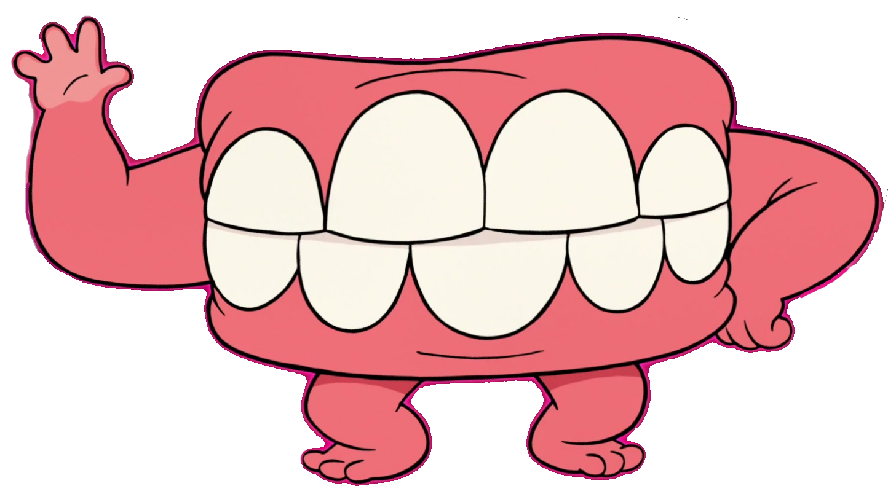

Bilatu hiru riudi animatu interneten eta kokatu itzazu jarraian azaltzen den modura:
1.Irudia:Defektuzko lerrokapena, testuarekiko espazio horizontala eta bertikala 30 pixeletakoak eta ertza 10 pixeletakoa
2.Irudia: Eskuinaldera lerrokatuta, testuetarekiko espazio horizontala eta bertikala 10 pixeletakoaketa ertzik gabe
3.Irudia:Ezkerraldera lerrokatuta, defektuzko espazio horizontala eta bertikala eta ertza 5 pixeletakoa